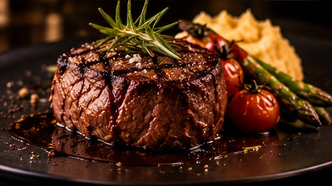
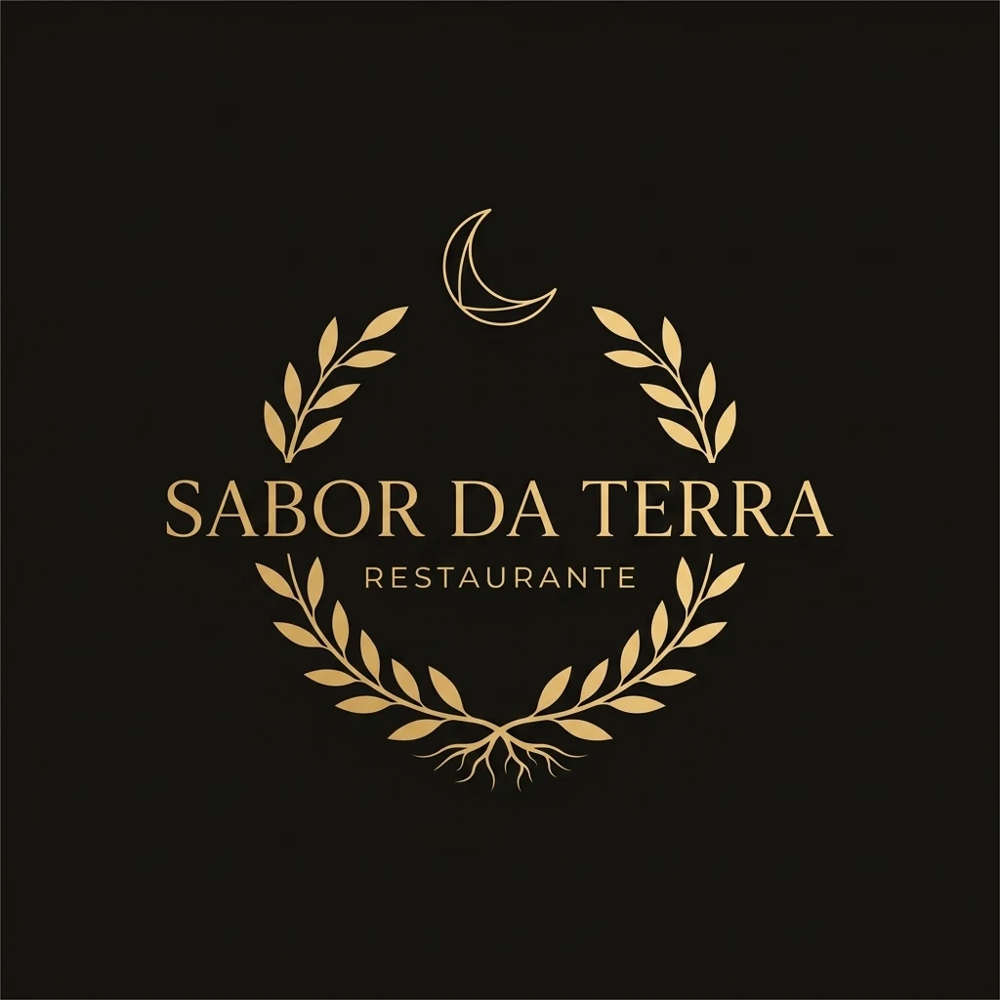
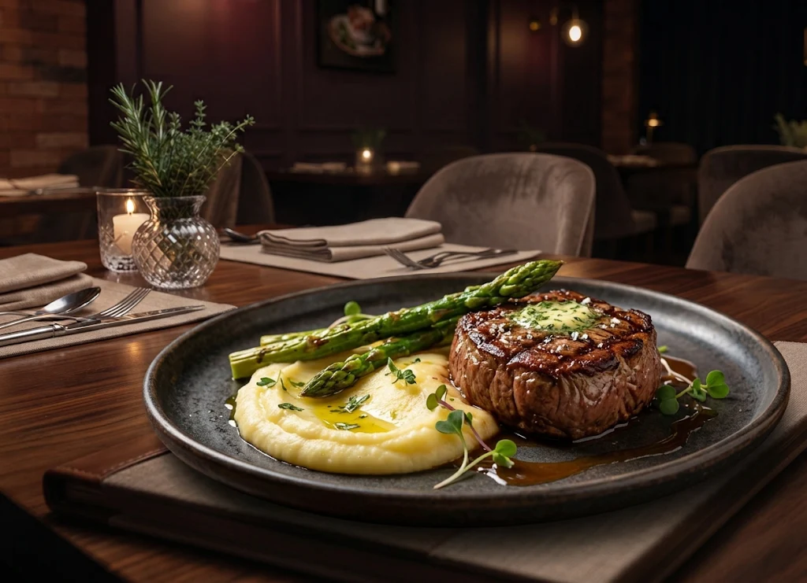

Filé mignon
R$ 72,00Grelhado no ponto, com purê, aspargos e tomates assados.


GASTRONOMIA BRASILEIRA
Uma experiência gastronômica especial, com sabores, aromas e ingredientes brasileiros.
Conheça nosso cardápioAlguns dos pratos mais pedidos.

Grelhado no ponto, com purê, aspargos e tomates assados.

Filé de salmão grelhado sobre risoto, com aspargos e tomates confitados.

Bolinho de chocolate com recheio cremoso, sorvete de creme e morangos.
No Sabor da Terra, cada prato é preparado com ingredientes frescos e muito cuidado. Unimos a cozinha brasileira a técnicas modernas para criar uma experiência única à mesa.

Venha nos visitar ou reserve a sua mesa.
Rua Exemplo, qulquer um
Centro — Itabuna
Terça á Domingo
10h às 23h
(00) 00000-0000
botarqualquerum@gmail.com